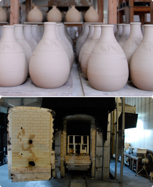
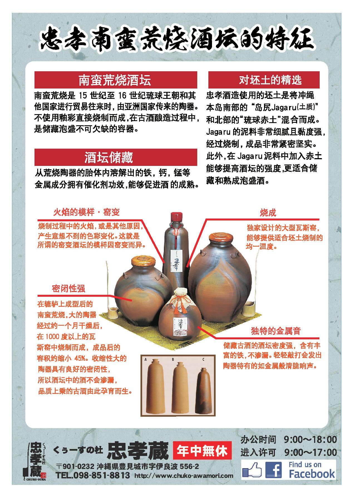

南蛮粗烧起源于南蛮瓮。是15～16世纪琉球王国展开海外大贸易的时代从东南亚传来的。
其特点是不使用釉料用高温烧制而成、自古作为泡盛酒的贮藏容器和古酒酿造容器而被使用。

粗烧指的是不使用釉药上色、保持了土陶本色的高温烧制而成的陶器。自古被认为最适合 用作泡盛酒的熟成。粗烧土陶中含有的铁份等金属成份融入缸里发生催化作用而加速泡盛的熟成。
本公司着眼于这一特点、本着「精益求精酿造最佳泡盛酒、最佳古酒」的基本理念、在冲绳县泡盛行业中率先开始了泡盛熟成容器－酒瓮的制造。第一代公司董事长大城繁先生亲自转动陶轮研究制陶、从而开创了业内首个自家陶窑制造的「忠孝南蛮粗烧酒瓮」。

酒瓮断片
使用质地细腻的泥土高温烧制、因此密度极高。
敲打时发出金属般的声音。
日本备前烧陶的收缩率为20%、而忠孝南蛮粗烧酒瓮的收缩率约为45%。
因此我们充满自信地保证
①绝不漏水 ②是最适合用来熟成的酒瓮。
※请把断片拿在手里确认一下。
